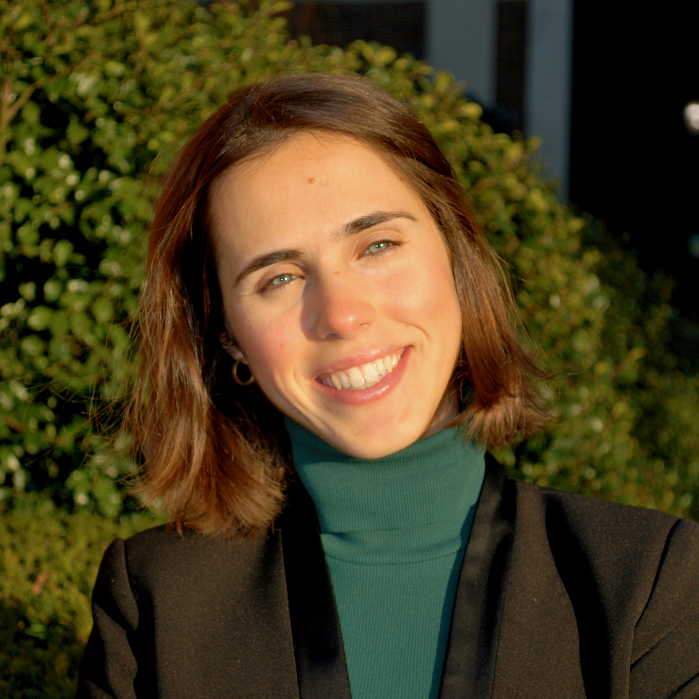

Master of Public Health (MPH)
Columbia University, Mailman School of Public Health New York (United States)
September/21– May/23 (exp)
Medical Doctor (MD)
University of Barcelona, Hospital Clínic Campus Barcelona (Spain)
September/13 – June/20
Early Career Visiting Scientist (ECVS)
International Agency for Research on Cancer (IARC-WHO)
May – Aug/22, France-India
Collaborated on the Access Cancer Care India (ACCI) project within IARC’s Early Detection, Prevention and Infections Branch.
Public Health Physician
Public Health Agency of Catalonia (ASPCAT)
July/20– August/21, Spain
Joined the COVID-19 epidemiological response team for Catalonia (population of 7.7M) at the Sub-Directorate General of Surveillance and Public Health Emergency Response (SGVERSP), within the Ministry of Health (MoH). • Monitored contact tracing (CT) performance indicators (KPIs) and periodically reported to the MoH COVID-19 response taskforce. • Trained 500+ contact tracers over a 2-month scale-up phase on the program’s execution, protocols, and digital databases (Go.Data-like). • Lead 2 CT-related epidemiological research projects, the results of which informed the governmental public health strategy. • Contributed to the regular COVID-19 response protocol updates, including the integration and interoperability of both the microbiology laboratory and CT databases, as well as the inclusion of SARS-CoV-2 variants of concern. • Presented Catalonia’s CT program monitoring and evaluation strategy and its 2020-21 KPI results to the WHO GOARN network. Research Associate Association of European Cancer Leagues (ECL) Mar/19 – ongoing, remote Providing technical expertise for ECL’s cancer control research activities, as well as consulting on European health policy affairs. • Evaluated the impact of the European Code Against Cancer (ECAC) through a qualitative study involving 30+ key stakeholders and policymakers. Co-chaired the presentation of its results during the European Public Health conference 2021. • Developed a novel digital health intervention promoting healthy lifestyles among adolescents, under the Third EU Health Programme project WASABY. Drafted its ECAC-based content, coordinated the software and design teams, conducted its piloting activities, guided WASABY app dissemination activities, and performed the intervention’s impact assessment. • Designed, conducted, and analysed a survey-based study of policies towards broadening cervical cancer screening coverage among vulnerable groups (CBIG-SCREEN H2020, results under publication in collaboration with IARC-WHO). • Conducted communication and stakeholder engagement activities for the MyPeBS H2020 project, a multi-centric randomized clinical trial investigating personalised breast cancer screening in 6 European countries. • Co-authored a manuscript advocating for the update of the 2003 European Council recommendations on cancer screening, which lead to an updated draft in 2022. • Supported ECL’s mandate to disseminate the ECAC in Europe, including the development of an interactive web map, and the validation of the Spanish modules for the IARC-WHO ECAC e-learning modules. • Assisted with ECL’s advocacy activities, including the drafting of a position paper on Europe’s Beating Cancer Plan, NCD-related consultations, and the convening of the MEPs against cancer (MAC) interest group. • Reported and supported the logistics of several ECL internal and civil society meetings, co-organised 4 capacity building workshops for ECL membership, as well as attended 30+ EU projects meetings and conferences in Europe. • Contributed to ECL’s EU4Healht funds application, for which the NGO was awarded two 1M+ grants in collaboration with IARC-WHO among other consortia. • Represented ECL at a national level as a Youth Ambassador for the ECAC. Research Assistant IDIBAPS – Hospital Clínic de Barcelona (HCB) Nov/18 – June/19, Spain Completed the MD graduation thesis “Breast Cancer Brain Metastasis: Clinical, Pathological and Molecular Characterization” under the supervision of Dr. Aleix Prat, head of the research group “Translational genomics and targeted therapeutics in solid tumors”. • Organized the study design and sample collection, conducted its data collection and analysis, and published its results in a peer-review journal. • Presented the thesis results at both the European and Spanish Society of Medical Oncology (ESMO and SEOM) conferences in 2019. • Was awarded a scholarship by the Spanish Association Against Cancer (AECC) for emerging clinical researchers. European Solidarity Corps Trainee Association of European Cancer Leagues (ECL) Oct/18 – Feb/19, Belgium Joined ECL to provide cross-departmental support in the NGO’s portfolio of activities. • Managed a network of 60+ Youth Ambassadors (YA) for the European Code Against Cancer (ECAC) and guided its strategy update and implementation. • Conducted social media communications, capitalising in key events such as World Cancer Day (in coordination with UICC) and the European Week Against Cancer. • Supported events logistics and reporting, and coordinated the academic program for the capacity building YA summer school 2019. • Contributed to ECL’s Cancer Prevention research activities, including WASABY and MyPeBS projects (outcomes described above). • Provided technical review to cancer-focused European policy affairs, notably for the Access to Medicines team and the MEPs Against Cancer (MAC) interest group.
More information on Meritxell’s background is available on LinkedIn